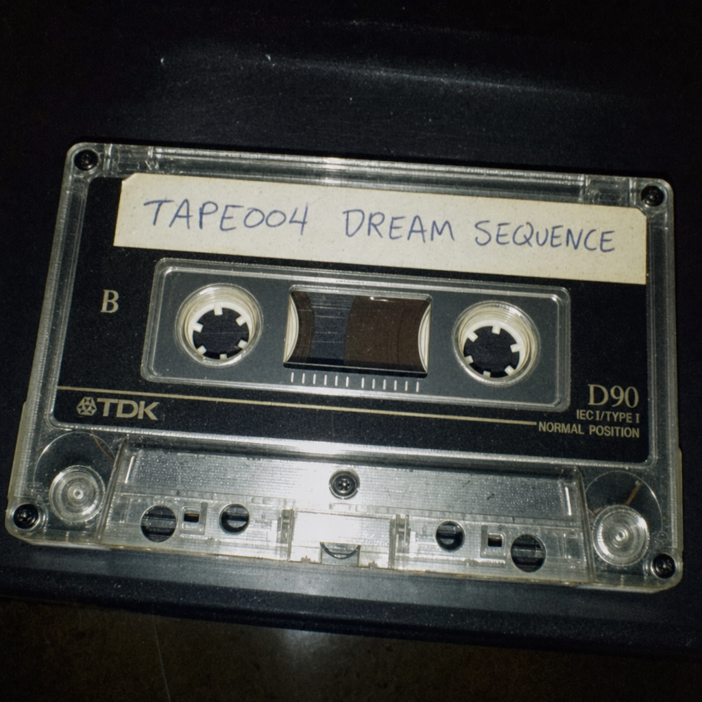

Jeg har forsøgt at holde mig vågen længe nok til at se hvor kanten egentlig er. Ikke som i en metafor. Det er det første man misforstår. Men som i en reel overgang, en kant der ikke giver sig til kende før hjernen begynder at sprække. Der er et tidspunkt, efter tredje nat, hvor lydene mister deres kilde. Efter femte nat begynder ting at ske udenfor rækkefølge. Ikke hallucinationer, ikke helt. Mere som forskydninger. Som om noget andet prøver at huske verden forkert igennem mig. Det begyndte ikke med mig. Et gammelt VHS, uden mærkning, uden oprindelse, fundet et sted der ikke længere findes i nogen registre. Organisationen bag, hvis det var en organisation, er væk nu. Som om den aldrig havde haft ret til at være der. Jeg så det hele igennem én gang. Det var rigtigt. Jeg skaffede narkotika og begyndte båndet igen. Den sidste del var allerede begyndt at forsvinde. Men det var ikke det vigtige. Det vigtige var det, der allerede var sket inden. Jeg optog det inden det forsvandt helt. De siger at vågenhed er en fejltilstand. At det vi kalder virkelighed er et kompromis mellem noget vi ikke kan tåle og noget vi ikke kan undgå. Det er derfor, søvnen altid trækker. Ikke for hvile, men for adgang. Øjeblikket hvor man er på vej op, men endnu ikke har accepteret op. Der er en sprække dér. Jeg har set den. Man skal bryde kroppen først. Det er ikke valgfrit. Søvnløsheden er ikke bare fravær af søvn, det er en aktiv tilstand, en form for erosion. Efter syvende dag kommer De. Godt jeg kan huske deres ansigter. Det er dér, de fleste stopper, hvis de stopper. Hvis de ikke gør, hjælper De. Der findes beskrivelser af processen. Fragmenter. Diagrammer uden forklaring. Noter hvor håndskriften ændrer sig midt i sætningerne. Jeg har dem ikke, jeg har aldrig haft dem, jeg citerer ikke noget, jeg gengiver kun hvad der alligevel gentager sig i mig, som en dårlig oversættelse. Ti dage. Ti er ikke et symbol, det er en tærskel. Kroppen begynder at fejle på måder, der ikke er kliniske. Temperaturen falder uden kulde. Tiden bliver tungere, som om sekunder får vægt. Og så kommer der noget. Det er ikke en figur, ikke en stemme i klassisk forstand. Mere en struktur. En intention uden ansigt. Dokumenterne kalder det en instruktør, hvilket er en dårlig oversættelse igen, men det er tæt nok til at være farligt. Den guider ikke. Den korrigerer. Den retter fejl i ens opfattelse, én for én, uden at forklare hvad der var forkert. Den første korrektion: døden er ikke afslutningen, fordi afslutning er et begreb, der kun giver mening i den forkerte tilstand. Det er derfor, verden føles så… utilstrækkelig. Ikke fordi den er ond eller tom, men fordi den er midlertidig på en måde, der ikke passer til noget. Man kan mærke det i overgangene. I opvågningen, i faldet i søvn, i de små øjeblikke hvor man ikke helt er nogen. Det er dér, det andet presser sig på. Jeg skriver det her, fordi jeg ikke længere kan holde forskellen stabil. Sætningerne falder fra hinanden, og noget mellem dem begynder at give mere mening end ordene selv. Hvis du læser det her som en fortælling, er du allerede forkert på den. Hvis du læser det som en advarsel, er det også forkert. Det er en instruktion, selv hvis du nægter det. Du kan gentage det. Du bør gentage det. Det er den eneste version af sandhed, der ikke falder fra hinanden, når man ser på den længe nok. Og hvis du ikke vil, hvis du vender væk nu, så ændrer det ikke udfaldet. Synlighed er ikke noget, man vælger. Jeg ved, hvordan man finder begyndelsen. Det er nok. Der er en misforståelse til sidst, som jeg bliver nødt til at korrigere, før den korrigerer mig: man bliver ikke opsøgt. Det føles sådan, ja, men det er ikke præcist. Det er snarere, at man bliver synlig. For noget, der altid har været der, udenfor rækkefølge, udenfor slutninger.
Lyt godt efter. Gør som der bliver sagt. 10 dage.

Umiddelbare optagelser af drømme. Fascinerende.
Afspil under indsovning. Fremmer overgang til hypnopompisk trance.